• Creamos nuevo estilo en Mapbox Studio
Entramos a estilos y creamos nuestro Estilo
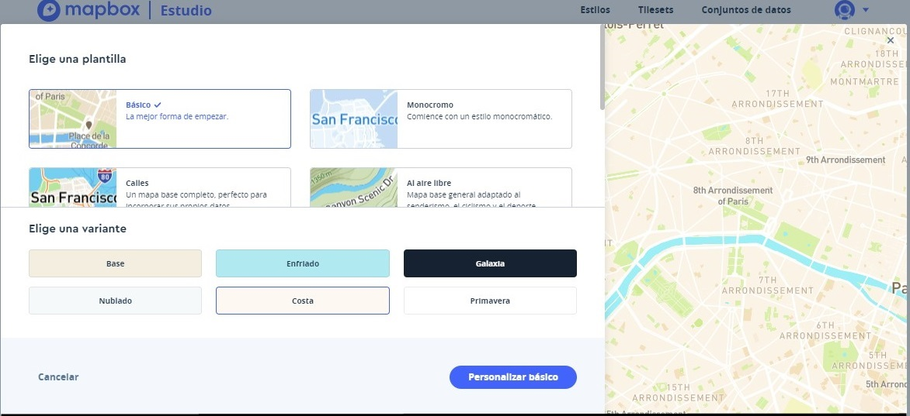
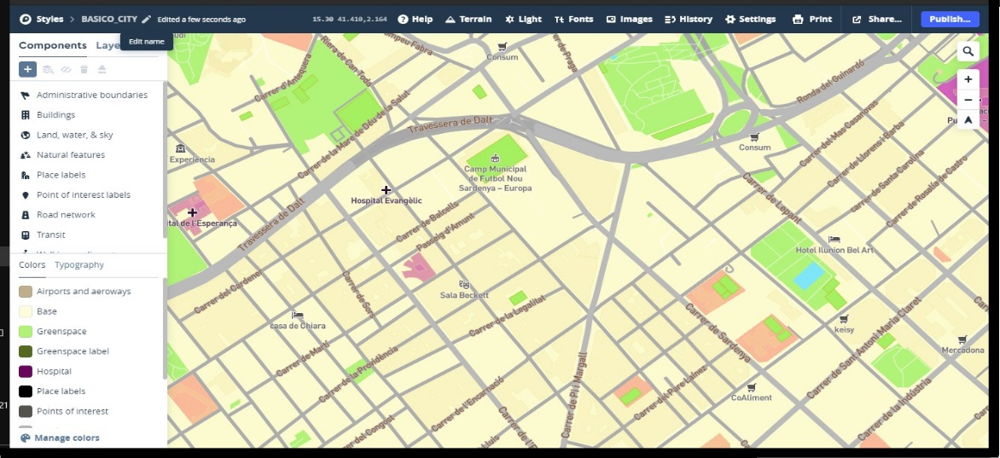
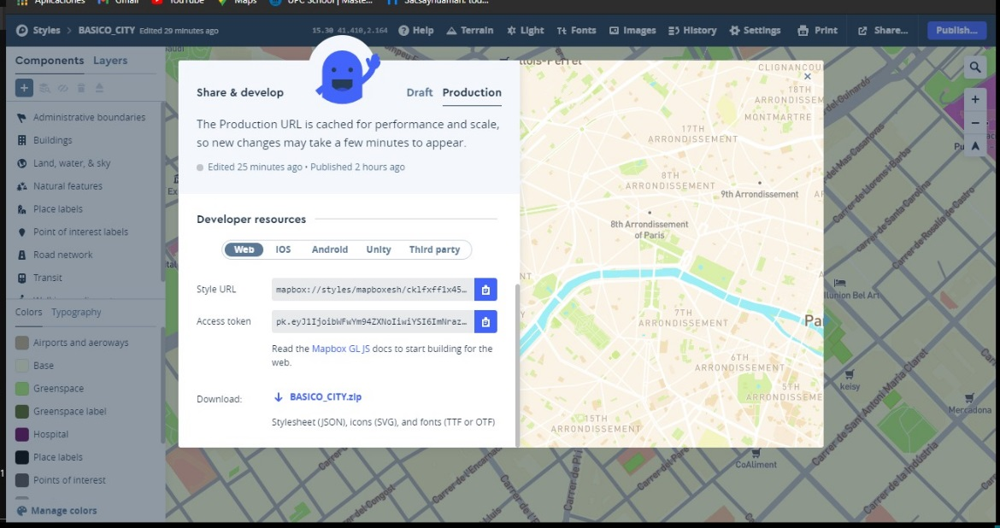
Seleccionamos un nuevo estilo
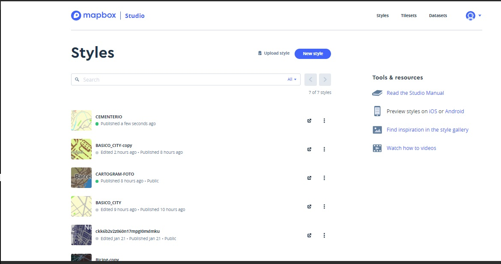
Descargamos capas datos/constru_cementerio.geojson. Podemos utilizar QGIS o https://geojson.io/ para visualizarlo
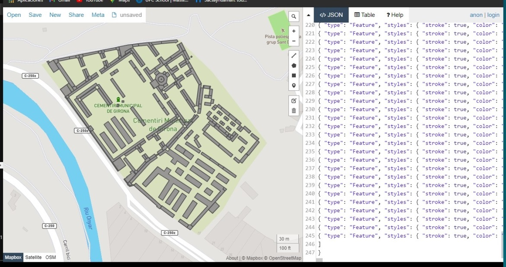
y datos/cementerio.geojson. Podemos utilizar QGIS o https://geojson.io/ para visualizarlo
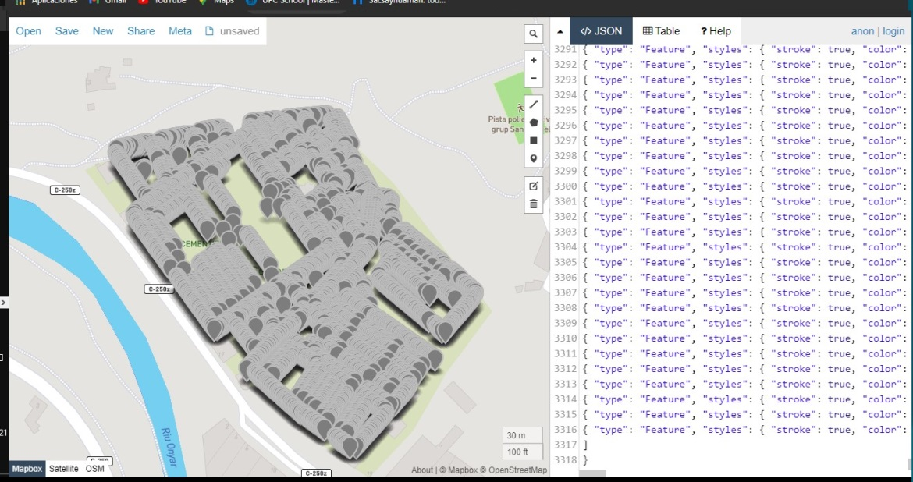
Guardamos los GEJSON
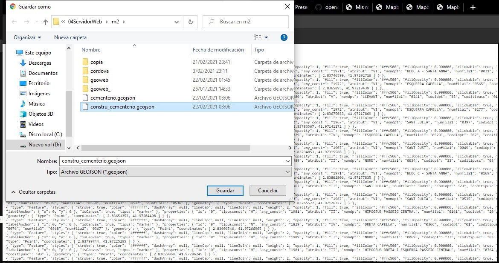
Añadimos las capas como tilesets en MapxBox
Cargaremos nuestro tileset
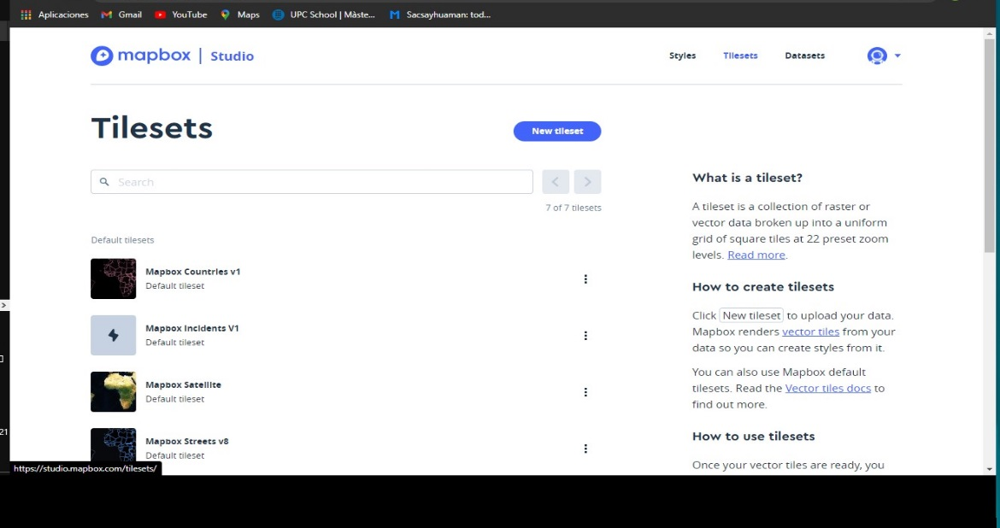
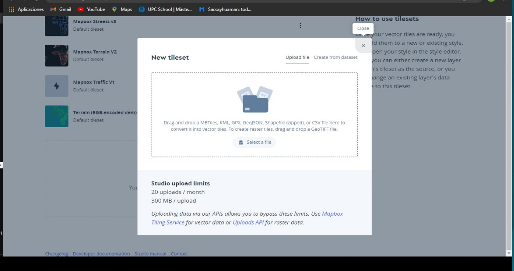
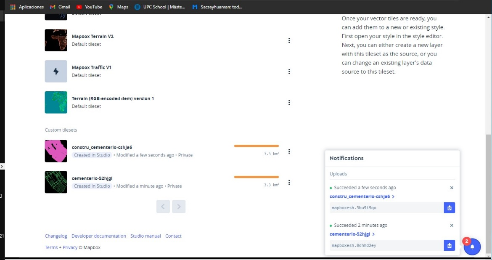
Integramos los tilesets dentro nuestro estilo creado Studio --> Styles -->Mi estilo --> Layers --> Add Layer -->Mi tileset
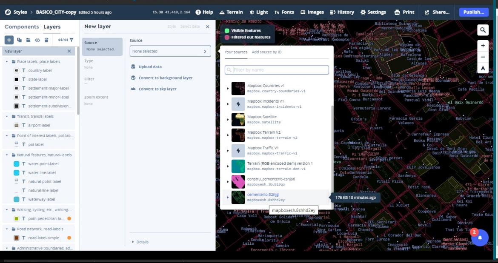
Ponemos fill extrusion
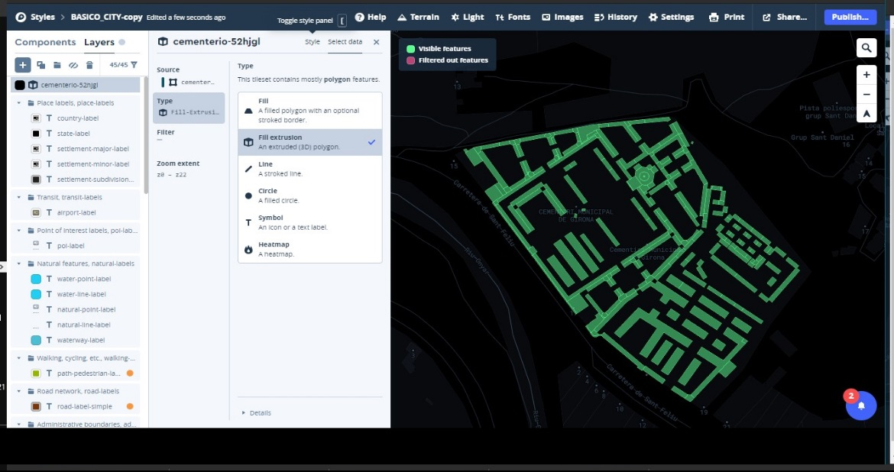
Editamos estilo capas y publicamos
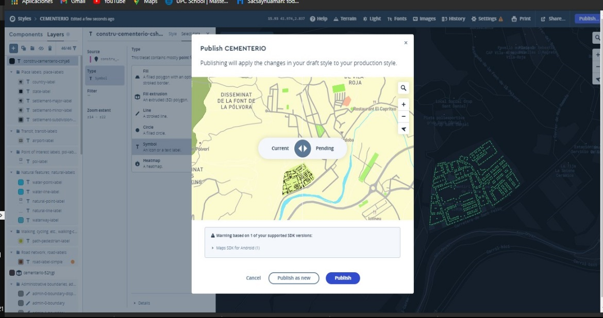
Creamos visor ejemplo mapbox-cementerio.html
Subimos ejemplo al GitHUB